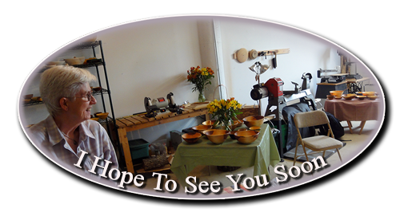

Put Allen Woodturning Events On Your Calendar

Please look for me at the following events
| Event | Dates | Description | Location |
|---|---|---|---|
| 2017 Rivertown Fall Art Festival |
Saturday, Oct 7 10 AM – 5 PM 5 PM - 8 PM (extended music and beer tent hours) Sunday, Oct 8 11 AM – 4 PM |
The Rivertown Fall Art Festival (RFAF)
is expected to bring in more attendees and vendors than ever before,
and will be the largest art festival in Stillwater history.
The Festival will feature 140+ fine art artisans
and will also include a wonderful selection of food vendors,
a beer and wine tent serving local spirits,
live music throughout the day,
concluding with the fun, six-piece 70's Disco Dance Band
Boogie Wonderland performing from 5:00 pm – 8:00 pm on Saturday night.
For a full list of artists, food vendors and music line up, visit the event website! http://rivertownfallartfestival.com |
Lowell Park,
located next to the St. Croix River,
in historic downtown Stillwater, Minnesota. 201 Water St N Stillwater, MN 55082 map |
| Saint Paul Art Crawl - Fall, 2017 |
Friday, Oct 13 - 6–10 PM Saturday, Oct 14 - 12–8 PM Sunday, Oct 15 - 12–5 PM |
I'm really excited to be a part of the St Paul Art Crawl once again. This will be my sixth year participating, so make sure to stop by my studio and see my latest creations. For anyone who hasn't been to a St Paul Art Crawl, it's a really neat event where you can walk around some St Paul neighborhoods, some fascinating old warehouse buildings, and see where & how your art is created. More info: http://www.saintpaulartcrawl.org |
ACVR Warehouse (The old Farwell, Ozmun, Kirk & CO. building) 106 West Water Street 4th floor (My Studio is on the East end) Saint Paul, MN 55107 map I've been at the ACVR Warehouse for over 6 years now. Some around town may know it as “The F.O.K Building”. It was built in 1911 for hardware manufacturers Farwell, Ozmun, and Kirk, & Co. Link to “The F.O.K Building” website. |